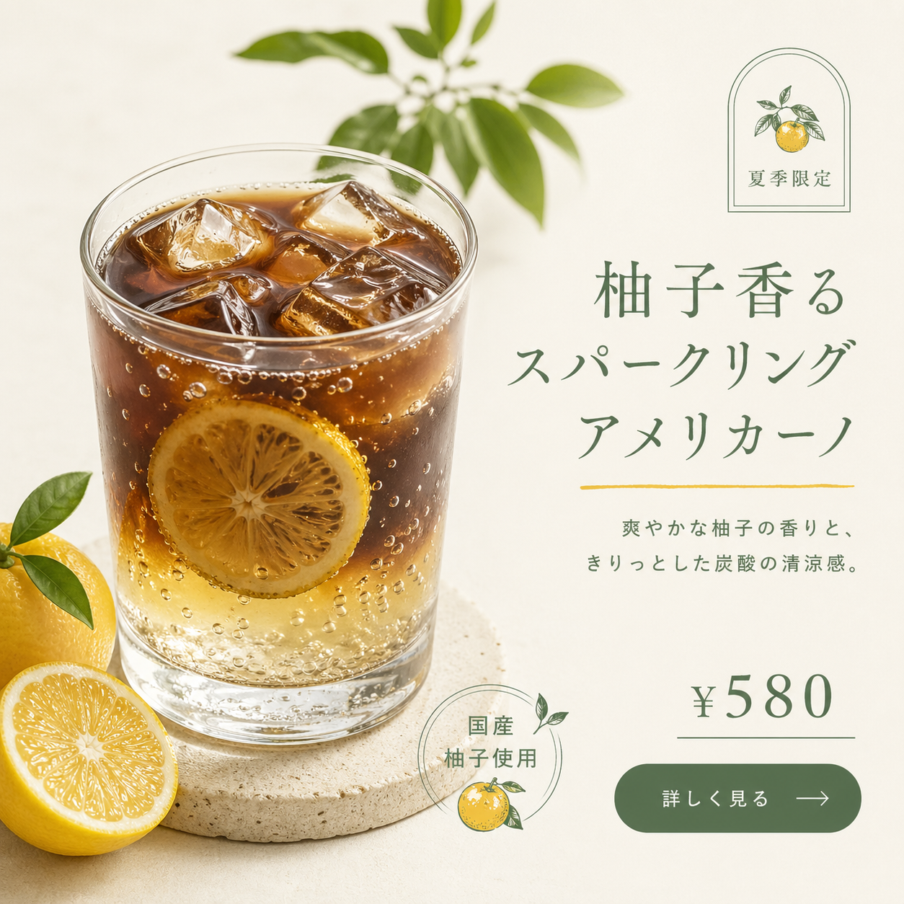
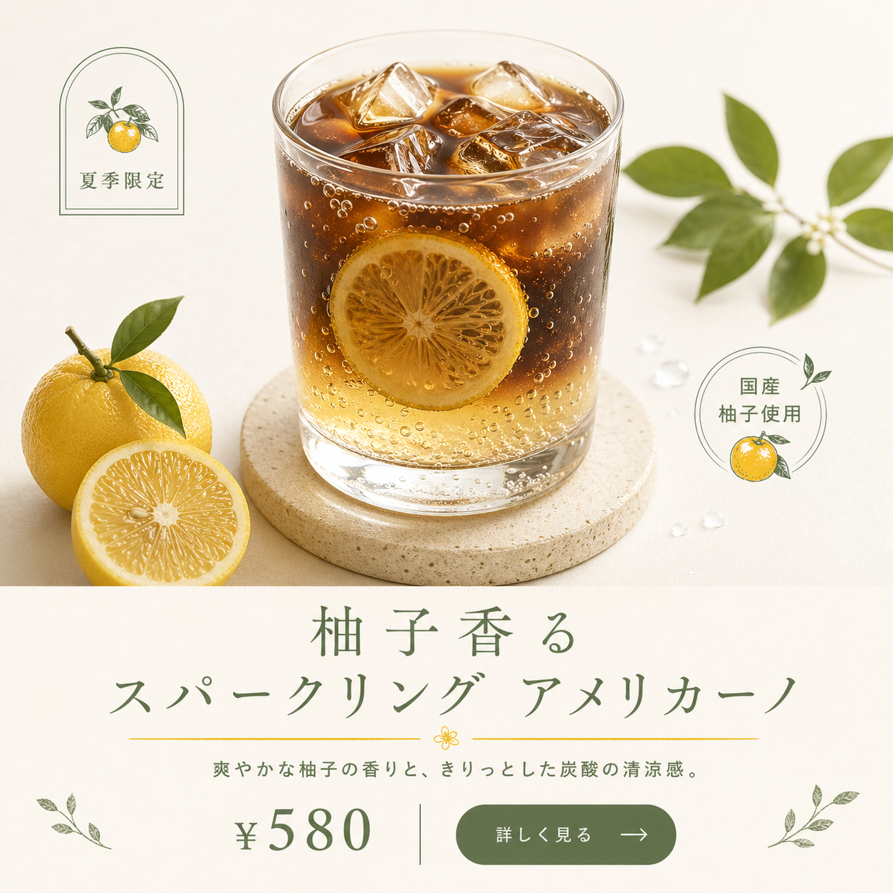
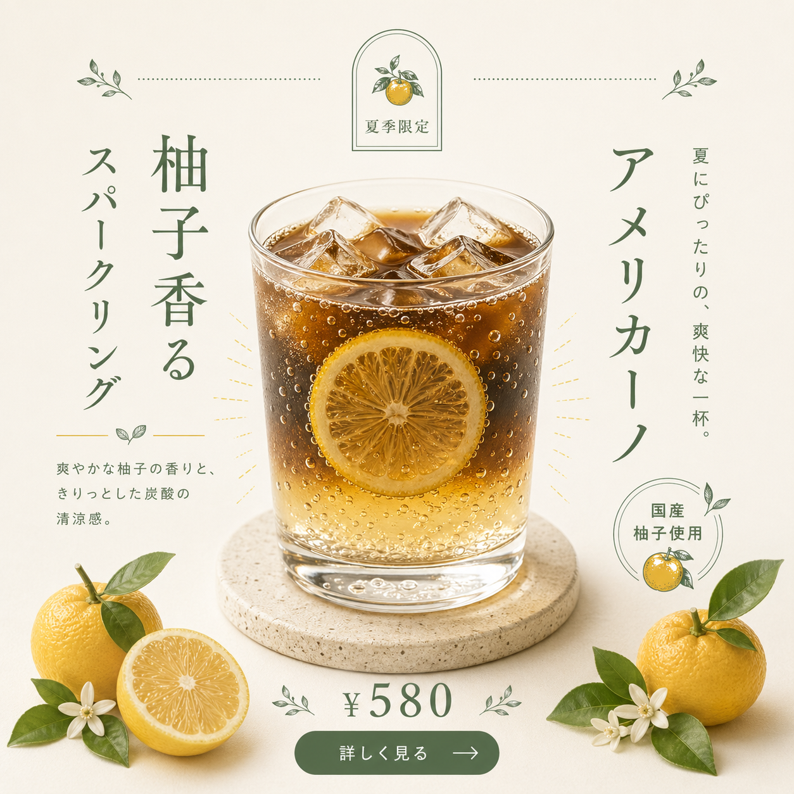
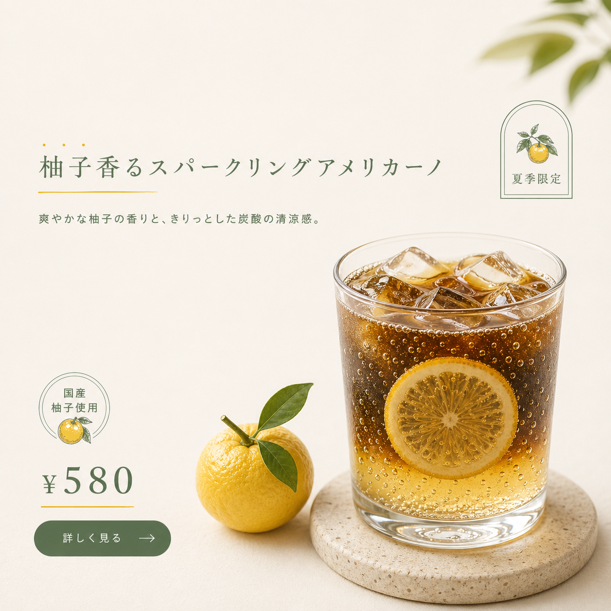

同線稿 × 多變體
同一份 brief、同一個骨架——你能跑出幾種版面？本單元教你系統性地探索 4 種版面變體，並用 PM 決策三問從中挑出最符合交付場景的那張。不是挑最漂亮的，是挑最合用的。
- 4 張版面變體（左右對調 / 上下對調 / 中央對稱 / 不對稱留白）
- 1 個挑選結果 + 30 字決策理由（用 PM 決策三問）
- 1 份場景選配判準對照表（給未來不同交付場景用）
完成這 3 件就算過關。不是挑最漂亮的、是挑最合用的。
看 — 同 brief × 4 場景 × 4 變體
主線 A 弄一下咖啡工作室老闆在 CH4-1 學會跨業種套用——一個骨架套 3 個業種。現在他準備做下週春季抹茶拿鐵行銷，同一個商品要跑 4 個交付場景：
| 場景 | 比例 | 視覺重點 | 讀者行為 |
|---|---|---|---|
| IG post | 1:1 正方 | 美感 + 可點擊 | 滑動瀏覽、1 秒判斷 |
| IG Story | 9:16 直式 | 動感 + 互動 | 上下滑、10 秒停留 |
| EDM banner | 橫式 | 訊息 + 點擊 | 信箱快速掃過 |
| 店內海報 | A4 直式 | 正式 + 吸睛 | 駐足 30 秒細看 |
共同 brief（咖啡拿鐵示範）：
業種：手沖咖啡店（弄一下咖啡工作室）
商品：春季限定 抹茶提拉米蘇拿鐵 ¥680
客群：25-35 歲女性
訴求：手作、季節感、療癒
必要元素：商品 / 主標 / 價格 / 徽章 / CTA
風格：日系、鼠尾草綠 + 奶油白先給結論——4 場景對應 4 種版面（學段展開細節）：
- IG post→ 原版（左右平衡、商品左文字右）
- IG Story→ 變體 B 上下對調（商品上、文字下、符合手機垂直動線）
- EDM→ 變體 A 左右對調（商品右、文字左、讀者先看文字）
- 海報→ 變體 C 中央對稱（商品中央、文字左右分列、正式感）
學 — 4 種變體模式逐一拆解
商品與文字位置左右互換。原版（骨架 1）：商品左 40% + 文字右 60%；變體 A：商品右 40% + 文字左 60%。
從 Z 型 → 反 Z 型（文字先讀、商品後看）
EDM / 郵件（讀者先掃文字）；阿拉伯語系文化區（右至左閱讀）；AB test 左右版本、測點擊率差異
IG post（主流用戶習慣 Z 型）；印刷品（左右對調沒優勢）
上下結構互換，文字前置。資訊在上、圖片在下；或商品在上、文字在下——依原骨架調整。
從上→下 T 型 → 文字優先型
IG Story（9:16 直式）——手機滑動天然垂直動線；EDM 訊息前置（文字在上、讓讀者 3 秒看到重點）
1:1 方形 IG post（上下對調視覺不平衡）
從偏側結構 → 中央對稱結構。原版（骨架 1）：商品左 + 文字右；變體 C：商品中央 + 文字左右兩側分列。
從 Z 型 → 中央放射
正式海報 / 印刷品——對稱 = 正式感；展覽 banner / 活動主視覺（需要端莊）；品牌形象廣告（非促銷型）
社群動態（太正式、缺活力）；促銷廣告（對稱不夠吸睛）
打破 50/50 平衡，改為 30/70 或 70/30 不對稱。原版：商品 50% + 文字 50%；變體 D：商品 30% + 留白 + 文字 70%（或反過來）。
保留原骨架動線，加入視覺呼吸
IG Story（9:16 直式）——不對稱 + 留白 = 現代感；藝術感 / 高端品牌（不對稱 = 個性）；極簡風格 preset（北歐 / 歐陸 / 瑞士排版）
資訊密集型（必要元素多、沒空間留白）；低預算品牌（留白多看起來「不用心」）
多變體 prompt 模板 + 場景選配判準
多變體 prompt 模板（直接複製使用）
把以下模板貼入 AI 對話，填入你的 L2 骨架與 brief，一次產出 A/B/C/D 四張：
請使用以下 L2 骨架 + 相同 brief、產出 4 個版面變體：
【L2 骨架】{骨架類型 + 結構描述}
【共同 brief】{業種 / 商品 / 客群 / 訴求 / 必要元素 / 風格 preset 六件套}
【變體 A｜左右對調】
商品與文字位置左右互換、其他不變。視覺動線從 Z 型 → 反 Z 型。
【變體 B｜上下對調】
上下結構互換、文字前置。視覺動線改為文字優先型。
【變體 C｜中央對稱】
商品移到畫面中央、文字左右兩側分列。視覺動線改為中央放射。
【變體 D｜不對稱留白】
商品占 30%、留白 + 文字占 70%（或反過來）。保留原骨架動線、加強視覺呼吸。
【關鍵要求】
4 變體必須結構明顯不同（第三者一眼能看出差異）：
- 變體 A：商品從左移到右（至少 30% 位置差異）
- 變體 B：主要元素從左右分布 → 上下分布
- 變體 C：從偏側布局 → 中央對稱（商品中置、文字左右）
- 變體 D：打破 50/50 平衡、改為明顯 30/70 不對稱
不可只做「微調」——需要結構層面的實質變化。
【輸出】4 張 1:1 圖、依序標 A / B / C / D預期差異：4 變體每跑一次結果都不同、每個學員跑的也不同。重點是你能辨認 4 種版面差異，不是「跑出最好看的」。
場景選配判準表
拿到 4 變體後，依交付場景挑選——不是「哪個最漂亮」：
| 交付場景 | 優選變體 | 次選變體 | 原因 |
|---|---|---|---|
| IG post（1:1） | 原版 | 變體 A 左右對調 | 左右對調可測 AB |
| IG Story（9:16） | 變體 B 上下對調 | 變體 D 不對稱 | 直式適合垂直動線、不對稱加現代感 |
| EDM / 郵件 | 變體 B 上下對調 | 變體 A 左右對調 | 文字前置、訊息優先 |
| 正式海報 / 印刷 | 變體 C 中央對稱 | 原版 | 對稱 = 正式感 |
| FB / LinkedIn | 原版 | 變體 A | 社群 banner 多橫式 |
| 高端品牌形象 | 變體 D 不對稱 | 變體 C 中央對稱 | 不對稱 = 個性、中央 = 正式 |
PM 決策三問
挑變體前，先答完這 3 問，再看 4 變體——這樣會防止你被美感綁架：
答完 3 問、對照場景選配判準表決定變體——不看「我喜歡哪個」、看「場景需要哪個」。
做 — 拿 CH4-1 的新 L4 跑 4 變體 + 挑選
打開 CH4-1 跑過的任一張新 L4（3 個新業種中的任 1 張）。記錄對應的 brief（六件套），決定目標交付場景（IG post / Story / EDM / 海報 任選 1 個）。
若 CH4-1 沒有新 L4 可用 → 用 PRAC2 的 L4 替代。
同對話內貼多變體 prompt 模板（見學段），等 AI 依序產出 A/B/C/D 4 張圖。
預期發現：4 張結構不同，但都從同 brief + 同骨架出發。若 AI 某 2 張變體看起來差不多 → 下迭代指令：「請確實做出 4 種明顯不同的版面差異」。
判定標準：把 4 變體縮小到 80×80 px 縮圖，仍能看出 4 種不同版面 = 成功；看起來都一樣 = AI 偷懶，重跑。
對 4 張逐一評分，挑 1 張最高分：
| 變體 | 適合本場景嗎？ | 理由 |
|---|---|---|
| A 左右對調 | 1–5 分 | |
| B 上下對調 | 1–5 分 | |
| C 中央對稱 | 1–5 分 | |
| D 不對稱留白 | 1–5 分 |
挑最高分後，寫 30 字決策理由：
「我挑變體 {X}，因為目標場景是 {場景}、需要 {場景需求特徵}、變體 {X} 的版面動線符合。」
- 跑出 4 變體（4 張明顯不同的版面）
- 對 4 變體逐一依場景判準評分
- 挑 1 張最高分、存檔備份
- 寫 30 字決策理由（扣場景需求、不是「好看」）
- 能說出「若場景換成 X、我會改挑哪個變體」
常見錯誤 3 條
跑 4 變體後，眼睛掃一下直接挑「最順眼的那張」——沒對照場景需求，沒用場景選配判準。結果：挑出來的那張在 IG 可能好看，但用在 EDM 時文字前置不夠，讀者掃過沒看到訊息。
消費者思維殘留——「哪張最喜歡就挑哪張」。但 PM 的工作是為目標場景挑最合用的，不是挑自己最喜歡的。美感讓交付場景的受眾去感受，你決定哪種版面最適合傳達訊息。
強制場景選配三問：（1）這張要給誰看？（2）讀者在什麼情境看到？（3）讀者該先看到什麼？答完 3 問、對照場景選配判準表決定變體。挑變體前先寫下 3 問的答案、再看 4 變體，這樣會防止你被美感綁架。
AI 回傳 4 張，但仔細看——4 張都是「原版微調」：A 只是商品稍微右移 5%、B 只是主標字級稍大、C 只是加了淡淡背景色、D 只是徽章位置微調。實際上都沒真的探索變體模式。
AI 預設「不要大改、改壞就不好了」——所以每個變體都只做安全的微調。這是 AI 的保守偏誤，不是你的問題。但你是 PM，你要指揮 AI 做真正的變體。
在多變體 prompt 中加入強調「必須明顯差異」的關鍵要求段落（模板內已含）。檢查方法：把 4 變體縮小到 80×80 px 縮圖，仍能看出 4 種不同版面 = 成功；看起來都一樣 = AI 偷懶，重跑。
跑 4 變體時手癢改了每個變體的 brief——變體 A 用春季抹茶、變體 B 改夏季柚子、變體 C 改秋季焙茶、變體 D 改冬季可可。結果 4 張圖變量太多（brief + 變體模式同時變），無法單純比較版面差異。
把「多變體」誤解為「多主題」——但本單元教的是同 brief × 多版面，不是多 brief × 多版面。多主題是 CH4-3（品牌 DNA 繼承）的範圍。
4 變體必須共享同一份 brief：業種 / 商品 / 客群 / 訴求 / 必要元素 / 風格 preset 六件套完全一致，只換版面呈現方式（A/B/C/D 模式差異）。跑完 4 變體後逐張核對 brief——若有任一項不同，這不算多變體，重跑。
檢核題
不看筆記，把 4 種變體模式填寫完整。至少命中 4 點算通過。
預期答案要點
- 變體 A 左右對調：商品與文字左右互換，動線從 Z 型 → 反 Z 型。適合：EDM / 郵件（文字前置）
- 變體 B 上下對調：上下結構互換，文字前置。適合：IG Story（9:16 垂直動線）或 EDM
- 變體 C 中央對稱：商品中央，文字左右分列，動線改中央放射。適合：正式海報 / 印刷品（對稱 = 正式感）
- 變體 D 不對稱留白：打破 50/50，改 30/70 不對稱，加強視覺呼吸。適合：IG Story / 高端品牌形象（不對稱 = 現代感）
- 加分項：4 變體共享同 brief，只換版面，不換主題（CH4-2 vs CH4-3 差異）
- 加分項：PM 挑變體用場景需求，不用主觀美感
不及格：只列名稱沒說動作 / 沒給場景對應 / 用「哪個漂亮」當判準。
若 3 個場景中需要相同變體，可重複，但要說明原因。至少命中 4 點算通過。
預期答案要點
- 場景 1 IG post → 原版（或次選：變體 A 做 AB test）。理由：IG post 主流用戶習慣 Z 型動線，原版最穩，不需要冒險。
- 場景 2 EDM → 變體 B 上下對調。理由：EDM 讀者掃過信箱時文字前置最重要，變體 B 把文字拉到畫面上方，讀者先看到訊息再看視覺。
- 場景 3 店內海報 → 變體 C 中央對稱。理由：海報是實體駐足閱讀，對稱 = 正式感 = 品牌端莊，商品放中央吸睛，文字左右分列方便細讀。
- 整體策略（加分）：3 個場景對應 3 個變體（原版 + B + C），共享同 brief（夏季柚子美式）；1 份 brief 跑完 4 變體後依場景各挑 1 張，4 張跑一次交付 3 張。
- PM 決策邏輯（加分）：不是「哪個漂亮挑哪個」，而是對應 3 個場景需求：日常 / 訊息 / 正式，3 種受眾情境傳達同商品但不同視覺策略。
不及格：3 個場景都挑原版（沒做場景區分）／「3 個都可以、看你喜歡」（沒 PM 決策）／ 挑變體 D 給正式海報說「比較特別」（海報要正式感不是特別感）。
整合任務 — 用 PM 決策三問挑 1 張
把你跑出的 4 變體並排放、用「受眾 / 情境 / 重點」3 問判斷哪張最合用、寫下 30 字決策理由。
| 變體 A 左右對調 | |
|---|---|
| 變體 B 上下對調 | |
| 變體 C 中央對稱 | |
| 變體 D 不對稱留白 | |
| 受眾 / 情境 / 重點 | |
| 挑哪張 + 30 字理由 |
卡住怎麼辦？
- 4 變體 prompt 跑出來都很像 → 加強「明確差異指令」（如「左右對調＝主標移到右側、商品移到左側」）
- 挑不出來、4 張都不錯 → 預設選 A（最通用）、其他 3 張當場景備用
- 決策理由寫不出 30 字 → 用「給 [受眾]、在 [情境]、強調 [重點]、所以選 X」公式
- 3 問挑出的跟你直覺不同 → 相信 3 問、PM 決策不憑感覺
📷 4 變體並列範例（PM 決策三問參考）
同 1 份 brief（夏季柚子氣泡美式 ¥580、骨架 4）+ 4 種版面變體：




本頁圖片為 AI 生成練習作品、不可商用。